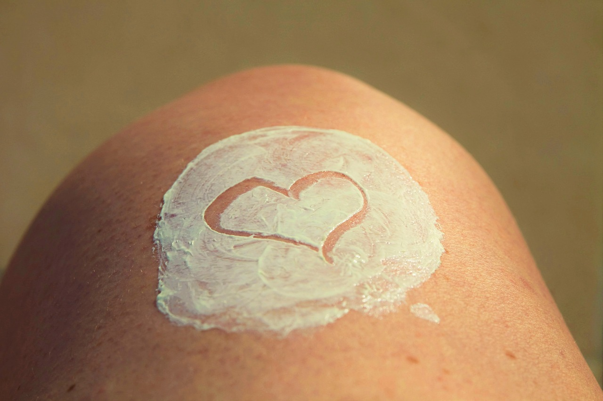

수면

베개 커버를 자주 세척하기
베개에는 각종 이물질과 노폐물들이 쌓입니다. 이러한 오염 물질은 염증으로 발전하여 여드름을 유발할 수 있습니다.
수면 자세 고치기
엎드리거나 옆으로 자는 자세는 화장품과 약국 제품의 흡수를 방해하며, 노폐물로 인한 염증을 유발합니다. 되도록이면 정자세로 잘 수 있도록 수면 습관을 고쳐주세요.
기초
크림 단계 생략하지 않기
지성 피부를 가지신 분들중에 기름이 많다고 크림 단계를 생략하시는 분이 있습니다. 그러나, 크림은 스킨, 세럼 등으로 보충한 수분이 날아가지 않도록 막아주기 때문에 꼭 사용해주세요.
외출 시, 선크림 바르기
선크림은 자외선으로 인한 여드름 착색이나 여드름 흉터의 악화를 막아주는 역할을 합니다. 외출시에는 선크림을 발라주세요.
세안
세안은 꼼꼼하게 하기
세안을 꼼꼼하게 하지 않으면 클렌징 제품이 남아 피부에 자극을 가합니다. 이것은 피부에 염증과 홍조를 유발하기에 클렌징 후, 물 세안은 20번 이상 해주세요.
수건은 자주 세척하기
수건은 세안후의 노폐물들이 쌓이며, 젖은 상태에서는 세균 번식이 활성화됩니다. 피부 트러블을 막기 위해서라도 수건은 자주 세척해주시길 바랍니다.
기타
얼굴에 손 대지 않기
손에는 각종 세균이 자리 잡고 있습니다. 되도록이면 얼굴에 손을 대지 않고, 필요한 경우에는 손을 깨끗이 씻고 해주세요.

물 많이 마시기
여드름의 원인 중 하나는 수분 부족입니다. 물을 마시는 것만으로도 여드름이 줄어들 수 있으니, 꼭 수분을 섭취해주세요.